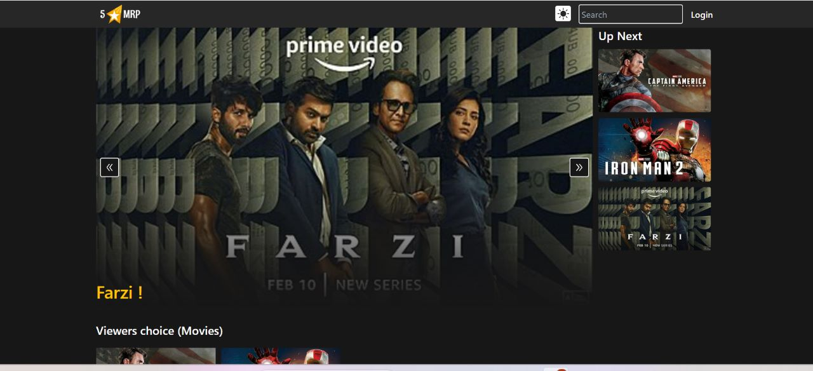
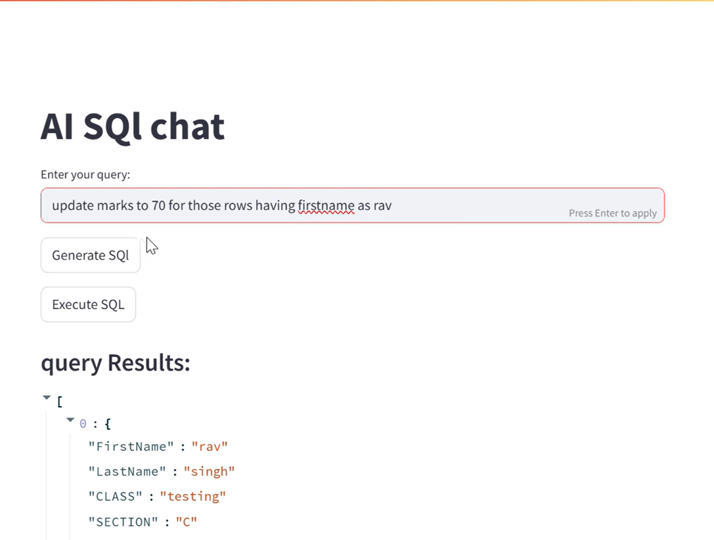
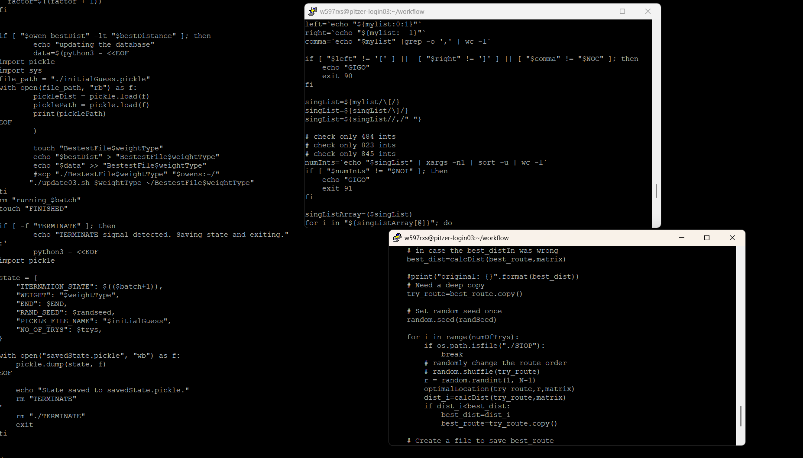
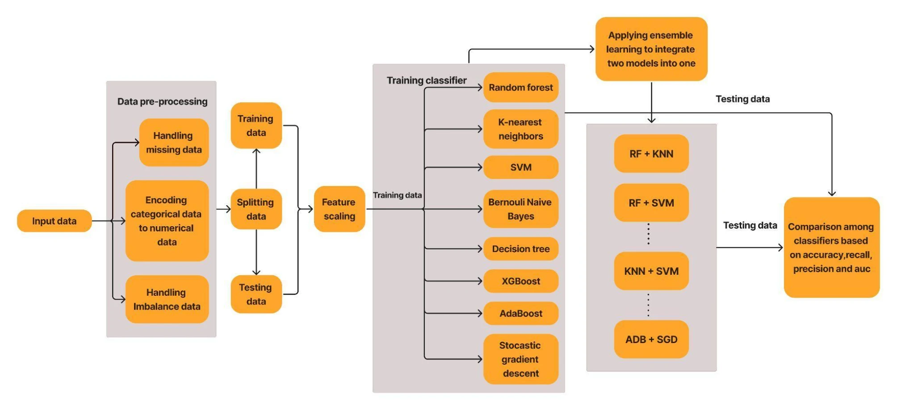
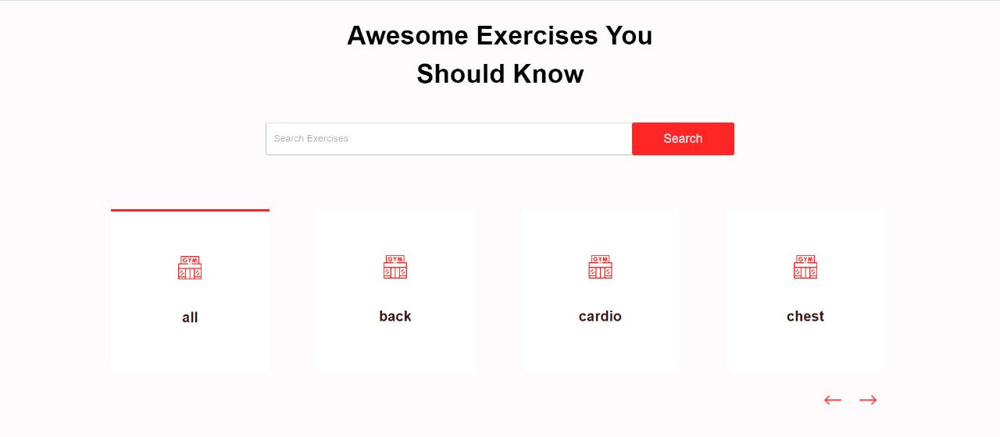
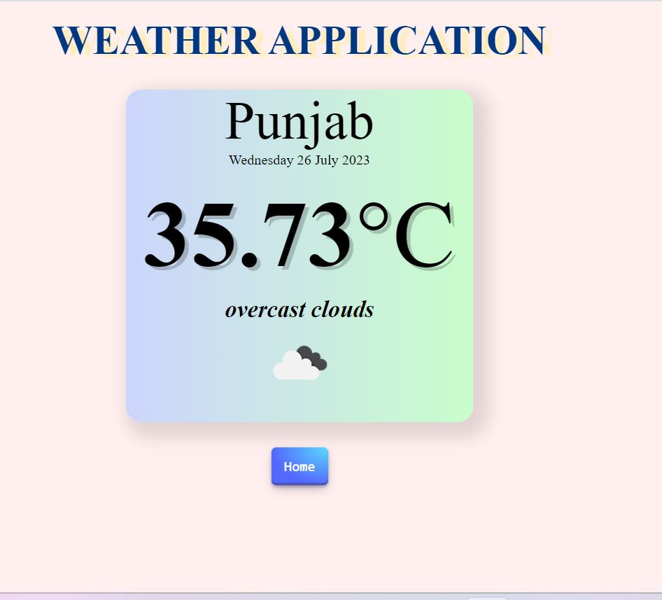

I love designing websites and upgrading myself by learning new skills and implementing them.
I believe in constantly updating myself by learning something new with practical Implementations.
I like to do some problem solving on various Competetive Coding platforms to improve my grip on both problem solving skills and on Dsa.
Languages:
Full Stack:
Machine Learning / AI:
Cloud / DevOps:
Data Engineering:
Tools:

Designed and developed a secure full-stack web application to sign up, sign in, and comment,
rate the movies.
Implemented robust user authentication with email verification using Mailtrap and
incorporated JWT (JSON web tokens) for managing user sessions.
Used Cloudinary to upload and store movie character images and trailers.
Developed admin Dashboard with restricted access, allowing authorized administrators to
manage movies, movie characters, and genres effectively.
Click on the Image to Visit

Built an
Agentic AI system
that converts natural language into optimized SQL using LLaMA 3 via LangChain + LCEL.
Enabled
auto query generation, execution in MySQL workbench, and performance tips
from plain English prompts.
Developed a
FastAPI backend
with a
Streamlit UI
for real-time database interaction and insights.
Click on the Image to Visit

Designed and delivered a fully automated distributed computing pipeline orchestrating 3
compute environments (AWS,
university HPC, Ohio Supercomputer) via a single scripted control node, coordinating job
submission, file transfers, and
execution across 150 total runs (15 batches of 10 trials).
Achieved up to 4 times runtime speedup through parallel execution and dynamic batching,
evaluating millions of TSP paths to
produce the best-known solution for a 1,090-city U.S dataset.
Click on the Image to Visit

Shipped research to real impact to predict
brain stroke, heart attack, Parkinson's disease, Alzheimer's disease, and cancer achieving
99% accuracy.
Performed extensive data analysis and preprocessing, optimizing the
149k+ records
through missing data handling, feature engineering, and normalization/scaling.
Utilized cross-validation and hyperparameter tuning to fine-tune the models,
improving accuracy by 0.8%,
sensitivity, and specificity for brain stroke prediction.
Click on the Image to Visit

Built a Completely Responsive Gym Website that shows around 1300 Exercises according to the
category chosen and exercises information and GIFs related to it.
Used Material UI to add pagination and ensure modern design and added videos to provide step
by step guide for each exercise along with search feature to search any specific
exercise.
Click on the Image to Visit

NodeJS | ExpressJS | EJS |Weather API
Made completely responsive website which utilized external API to fetch real-time weather
data based on user input .
Used Ejs to ensure dynamic content rendering for different cities
Click on the Image to Visit
My favourite Quote:
Practise like you never win.
Play like you never lost.